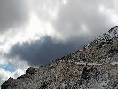
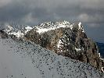
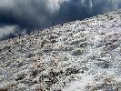

Rakúske skialpy 2012
2012 · Rakúsko
Rakúske skialpy 2012
Rax Alpen
Voľná sobota, relativne obstojná predpoveď počasia, absťák na lyže - výhodné východzie podmienky na skialpovú akciu v blízkych Alpách. Po viacerých neúspešných pokusoch nájsť spočníka, skúšam "havajského chlapca ". Lubo na moje veľké prekvapenie súhlasí a tak v sobotu ráno smerujeme do Rakúska. Parkujeme na Preiner Gscheid. Na parkovisku je už dosť áut, neklamné znamenie, že miestni už dávno vyrazili. Počasie je síce obstojné, ale fúka silný studený vietor. Počas výstupu k chate Carl Ludwig Haus už stretávame väčšinu vracajúcich sa skialpinistov. Je zrejmé, že sa otočili pri chate, pre silný vietor.
S našim príchodom k chate vietor trochu ustáva a tak pokračujeme ďalej, smer Heukuppe. Na vrcholu je už takmer bezvetrie, bohovia Raxu nám dnes dopriali.:-)
Krátky oddych, zopár fotiek a následuje celkom slušný zjazd k autu
Velmi vydarený deň.





Schneeberg
Opäť sa raz ukazuje voľný víkendový deň, kamaráti nemôžu a tak nakoniec celkom rád aj sám vyrážam do Rakúska. Schneeberg je môj cieľ. Už ani neviem ktorý raz tam idem. Parkovisko je už klasicky plné, domorodci vyražajú na túry ako sa patri, zavčasu. Už tu je hmla a čo je horšie ani s pribudajúcou výškou neredne. Pôvodný plán výstup žľabom, z dôvodu problémovej orientácie mením na výstup mne známou trasou. Pri Edelweiss hutte bočím doľava, smer Fadensteig. Ešte pol hodina boja v strmom lese a na moju radosť hmla začína rednúť. Sneh končí, lyže pripínam na ruksak a tristo výškových metrov ich aj tak nesiem. Dúfam, že na vrcholovom plató ich budem mocť opäť pripnúť na lyžiarky. Očakávanie nie je naplnené, hore je nepríjemý ľad.
Cestou kontrolujem žľab Breite Ries, akurát prví odvážlivci ho idú lyžovať, sneh sa zdá akurát. Ja pokračujem k Fischer hutte, dávam si raňajky,desiatu a obed v jednom. Je krásny slnečný deň, tak sa ani neponáhľam. Už mám pred sebou iba zjazd.
S vstupom do žľabu, zisťujem, že podmienky sa s tým, že slnko nesieti do žľabu, zmenili. K horšiemu. Je to dosť tvrdé. Lyže však držia dobre, ťažší horný úsek zvládam bezpečne a bez problémov. Žľab sa rozširuje, aj podmienky, by mali byť lepšie, No nie sú. Z popadných lavín sú narobené rolety a sú riadne zmrznuté. Kĺby mi len tak hrkocú.:-)
Za mnou ide ešte jeden lyžiar, ide mu to dobre a je aj rýchly. Nevenujem mu príliš pozornosť, až keď zaregistrujem, že spadol. Spočiatku sa iba šmýka, potom robí kotrmelce. Padá 150 metrov a konečne sa zastavuje. Zbieram mu paličky a lyžujem k nemu. Jednu lyžu má na nohe, druhá mu vypla a akoby zázrakom zastala 10 metrov pod ním. Hovorí, že je všetko v poriadku. Ešte počkám kým sa pozbiera a idem pokračujem v zjazde.
Superný deň, aj keď s malou výstrahou, že treba byť stále v strehu
:-)


Hochschwab
Je sobota ráno, ešte nie je ani 6 hodín a Lubo ma už prezváňa, to je neklamné znamenie, že je na dosah. Zbehnem dolu, preložime Lubov náklad do môjho auta a po chviľke už aj smerujeme k ďalej. Nalodíme Horára a čierny šíp už naberá smer Rakúsko. Náš dnešný cieľ je osada Weichselboden. V oblasti Hochschwabu chceme vyvetrať naše skialpové lyže.
Po deviatej sme na mieste. Že sme mimo Slovenska svedčí to, že okoloidúci domorodci na zdravia ako starých známych. My si doprajeme v kľude alimatizačné raňajky, potom už nasleduje lepenie pásov a môžeme vyraziť. Náš dnešný cieľ nie je práve najjednoduchší. Vrch Hochschwab a výšľap o 1500 výškových metrov. O tom, že to nie je trasa z kategórie ľahkých svedčia iba 3 autá na parkovisku. Je krásny slnečný deň, no pre našu potrebu, je až príliš teplo. Snehu je dookola dosť, avšak lesná cesta je odhrnutá a bez snehu a tak na našu ‘‘veľkú ‘‘ radosť, nesieme lyže na pleciach. Našťastie to netrvá dlho a po pol hodinke ich pripíname na lyžiarky.
Lesnú cestu strieda chodník a časom redne aj smrekovo-borovicový les. Po 2 hodinách stúpania, už nad úrovňou lesa stretávame vracajúcich sa skialpinistov z túry. A my sme iba v polovici výstupu.
Modré nebo postupne zapĺňajú tmavé mraky a zdá sa, že predpoveď búrky sa aj naplní, navyše keď Horár zaregistruje v diaľke zopár bleskov. Ideme však ďalej, lebo vieme, že máme cestou pre prípad núdze útočisko. Schiestl hutte, je sice zatvorená, avšak winterraum má byť otvorený. Dvesto metrov pod vrcholom nás už zahaľuje hustá hmla a za chvíľu začína z neba padať aj polystyrén. Nasúpame ešte 100 metrov a bočíme k chate. Na našu radosť je winterraum otvorený a je v ňom príjemne teplúčko. Trenírkovú teplotu a čakanie na zlepšenie počasia si krátim driemotou a Lubo dokonca aj chrápkaním.:-) Zvečerieva sa, je pol piatej, no počasie sa nelepší. Kvalita snehu smerom na vrchol je naprd a tak sa rozhodujeme pre návrat do doliny. Zlyžujeme 400 metrov a nad našimi hlavami sa objavuje aj modré nebo. Nuž čo, nie vždy to výjde. Kvalita snehu je však nad očakávane dobrá a tak si zjazd aj vychutnávame. K autu prichádzame aj tak až za šera.
Ubytovanie máme zabezpčené ako pred x-rokmi v obecnom “penzióne“. Naša večerná akcia má vysokú spoločensko-kulinársku úroveň, vlastne ako vždy. J


Ráno nás ani s prechodom na zimný čas ničím neprekvapuje, ba vlastne aj áno. Lubo už počas raňajok prichádza s návrhom, aby sme nedeľu strávili nejakou ľahkou prechádzkou v priľahlej doline. Ostatní členovia výpravy to však razantene zamietajú:-) Následuje presun na juh Hochswabu, Bodenfof je dnešné vychodisko na túru. Na parkovisku je asi 100 áut, až máme z toho zimomriavky. Na naše veľké prekvapenie sme za celý deň stretli iba asi 20 ľudí. Až večer sme pochopili, že ostatní si vybrali trochu nenáročnejšiu túru. Dnes nás čaká asi 1400 výškových metrov. Po dvoch hodinách sme v polovičke výstupu a robíme si odychovú prestávku. Lubo sa pod Zagelkar-om, bobónikom dnešného výstupu, rozhoduje šetriť sily na pracovný pondelok a necháva nás samých. Vystupujeme po padnutých lavínach a občas sa okolo nás zosúvajú ďaľšie, našťastie sú to už iba malé. V polovičke muldy to presmerujeme to vedľajšej, no nie je ľahšej. Sneh sa nám tu však zdá lepší. Horár ide ako namydlený blesk, mám čo robiť, aby som s ním držal krok. Na hrebeni nás víta nepríjený studený vietor a stádo kamzíkov. Kocháme sa krásnymi výhľadmi na vrcholové časti masívu Hochschwab. Aj náš včerajší cieľ je na dosah. Avšak čas pokročil a tak, odlepujeme pásy a kreslíme prvé oblúky v strmom svahu. Našťastie sneh už trochu primrzol tak si to aj užívame.
O šiestej sme pri aute, kde Lubo pre nás nachystal čo to pod zub. Na chate si dávame obvyklé záverečne pivko a Lubo nás neohrozene vezie domov.


Po dlhšom čase úžasná skialpová akcia v náročnejších horských oblastiach.
Dušan
Viacej foografií na Picasaweb
Pôvodná stránka: archív horecsport.sk